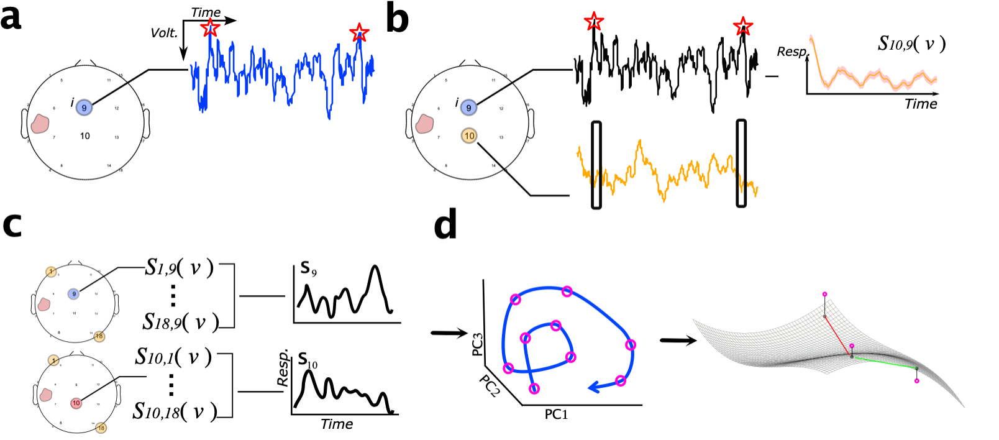
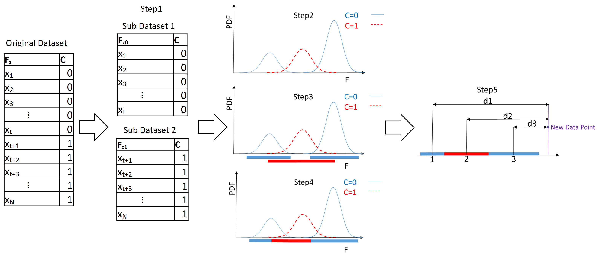

Overview
We are witnessing a rapid growth in the development of technology to measure processes within the brain, which in turn can be correlated with brain function and dysfunction. However, these recordings in their raw format are often difficult to interpret, and it is only after processing and transforming them that we are able to gain meaningful information about the underlying processes of the brain. The main challenge here is how to go from high dimensional recordings of brain activity to low dimensional latent variables that provide useful information about the states of the brain. At three sigma lab we are focused on the extraction of latent information from complex recordings of brain activity. The extracted information can be used by clinicians to make better decisions about patient care and enable scientists to better understand how the brain works.
Current Projects
Detecting Protein Tau in Chronic Traumatic Encephalopathy (CTE) using Deep Learning Techniques:

CTE is characterized by a slow spread of protein Tau throughout the brain, but its progression can only be detected by post-mortem examination. Hence, there is a large interest in developing in vivo CTE diagnosis methods using imaging biomarkers. In this study, we aim at using deep learning techniques to step towards developing such diagnosis method. More specifically, using co-registered histology to MRI scans of ex vivo human brain tissue blocks with a confirmed neuropathological diagnosis of CTE, we want to devise customized deep learning method to detect regionality and degree of pathology. The ultimate goal is to develop a fully automated framework for detecting P-tau.
Past Projects
Disambiguating Coma Etiologies by Assessing the Lability Of EEG Dynamics:

One of the key challenges in clinical neurology is the lack of a reliable quantitative measure of consciousness, which makes it difficult to assess the state of unresponsive patients such as those that are in coma. Nevertheless, a key signature of coma is the severe disruption of electrical activity in the brain, which is related to the deterioration of consciousness. We can capture the electrical activity of the brain using electroencephalogram (EEG) sensors. However, since these patients cannot interact with their surroundings, classical quantitative EEG approaches that rely on exogenous stimuli are not adequate for characterizing such disruptions of brain activity. Hence, we have developed a new method termed Intrinsic Network Reactivity Index (INRI) that aims to assess the overall lability of brain dynamics without using extrinsic stimulation. Using retrospective EEG dataset from comatose patients, we have shown that there is a nice correlation between the INRI index and the Glasgow Coma Scale (GSC) which is a standardized scale used to assess the conscious state of coma patients [1]. We further extended this approach to the Frequency Based Intrinsic Network Dynamic Reactivity (FINDR) approach, which aims to quantify the engagement of different brain regions with each other. We have shown that the FINDR values are correlated to the spatial properties (in this case location) of the brain injury [2].
Detecting Seizure Onset by Identifying Change Points in EEG Signals:

Epilepsy is one of the most common disabling neurological conditions characterized by recurrent and unprovoked temporary electrical disturbance in the brain, known as seizures. Seizures are typically detected by visual analysis of electroencephalogram (EEG) signals performed by neurologists, but this could be automated for real-time monitoring of epilepsy patients. Unfortunately, most of the methods developed for seizure detection are computationally intensive and cannot be easily implemented in an embedded system (i.e. mobile phones). In a proof-of-concept study, we showed it is possible to use simple time domain features extracted from Electroencephalogram (EEG) signals with a distance-based classifier to detect seizure onsets with low complexity (in this case O(n2) where n represents the dimension of the dataset) [3]. Later, we extended this study and developed an adaptive seizure onset detection framework using a combination of blind signal separation methods and a change point detector to take into account the inter-patient variation of EEG signals during seizure detection [4].
Detecting Brain Aneurysm Rupture using Interpretable Learning Systems

Among various data mining algorithms, the rule-based methods are preferred in the medical domain since they can provide simple if-then rules that help the physicians understand the logic behind classifying a patient into a specific risk category. Unfortunately, the majority of rule-induction algorithms can only handle discrete datasets, whereas most neuroimaging datasets are continuous. Hence, to take advantage of the rule-induction algorithms in continuous datasets, we proposed a new discretization method based on Gaussian Mixture Models (GMM) that effectively discretizes the continuous variables with minimum information loss [5]. We showed the proposed method can be used for predicting the risk of brain aneurysm rupture from various morphological features of blood vessels in the brain.
References
- Khanmohammadi, Sina, Osvaldo Laurido-Soto, Lawrence N. Eisenman, Terrance T. Kummer, and ShiNung Ching. "Intrinsic network reactivity differentiates levels of consciousness in comatose patients." Clinical Neurophysiology 129, no. 11 (2018): 2296-2305.
- Khanmohammadi, Sina, Osvaldo Laurido-Soto, Lawrence N. Eisenman, Terrance T. Kummer, and ShiNung Ching. "Localizing focal brain injury via EEG spectral variance." Biomedical Signal Processing and Control 68 (2021): 102746.
- Khanmohammadi, Sina, and Chun-An Chou. "A simple distance based seizure onset detection algorithm using common spatial patterns." In International Conference on Brain Informatics, pp. 233-242. Springer, Cham, 2016.
- Khanmohammadi, Sina, and Chun-An Chou. "Adaptive seizure onset detection framework using a hybrid PCA–CSP approach." IEEE journal of biomedical and health informatics 22, no. 1 (2017): 154-160.
- Khanmohammadi, Sina, and Chun-An Chou. "A Gaussian mixture model based discretization algorithm for associative classification of medical data." Expert Systems with Applications 58 (2016): 119-129.
Acknowledgments